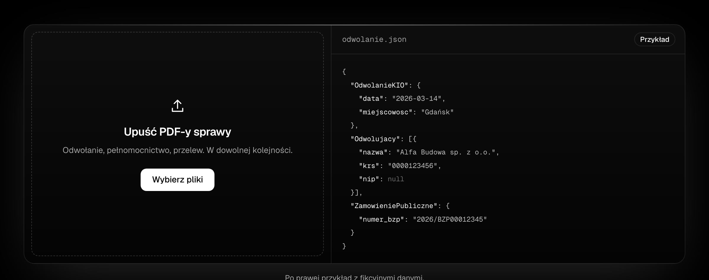

Zadanie UZP: Odwołania2json
HackNation 2026
Sprawa odwoławcza KIO: z PDF-ów do JSON-a.
doc2json
doc2json
doc2json
Zadanie UZP: Odwołania2json
HackNation 2026
„Dla człowieka zrozumienie takiej dokumentacji jest stosunkowo proste. Dla systemów informatycznych stanowi jednak duże wyzwanie.”
Problem
Zadanie UZP: Odwołania2json
HackNation 2026
dokument_01.pdf
dokument_02.pdf
dokument_03.pdf
dokument_04.pdf
doc2json
klasa z treści
pola ze schematu UZP
odwołanie
przelew
pełnomocnictwo
pusty plik
doc2json
03 / 09
Zadanie UZP: Odwołania2json
HackNation 2026
Strony, pełnomocnik, powód odwołania, numery postępowania.
Mocodawca, osoby podpisujące, pełnomocnicy.
Data, kwota, rachunki, tytuł.
doc2json
04 / 09
Zadanie UZP: Odwołania2json
HackNation 2026
[ __ ]
F1, wszystkie dokumenty
[ __ ]
F1, holdout 51-60
doc2json
Dane treningowe UZP (syntetyczne) · [commit __]
05 / 09
Zadanie UZP: Odwołania2json
HackNation 2026
klasa: nowa_klasa
schemat: schemat.json
wskazowki_klasyfikacji: ...
instrukcje_ekstrakcji: ...
doc2json
Plan · model open-weight, API w UE/EOG, CLI i GUI
06 / 09
Zadanie UZP: Odwołania2json
HackNation 2026

doc2json
Po prawej przykład z fikcyjnymi danymi
07 / 09
Zadanie UZP: Odwołania2json
HackNation 2026
50%
Jakość ekstrakcji (F1)
30%
Elastyczność
20%
Architektura
doc2json
Wagi z opisu wyzwania UZP, sekcja 8
08 / 09
Zadanie UZP: Odwołania2json
HackNation 2026
Dziękujemy.
doc2json.pl
doc2json
Michał Furgała · Ryszard Kacperski · Łukasz Lenkiewicz · Dominik Galus
09 / 09